from pathlib import Path
import sys
import numpy as np
import matplotlib.pyplot as plt
ROOT = Path.cwd().resolve()
if ROOT.name == "notebooks":
ROOT = ROOT.parent
sys.path.insert(0, str(ROOT / "src"))
from advanced_mpc_lmpc.racing import (
build_demo_track,
frenet_rates,
bicycle_lateral_forces,
bicycle_spatial_rhs,
lateral_speed_squared_cap,
segment_time_from_speed_squared,
periodic_minimum_time_speed_profile,
friction_circle_utilization,
)
np.set_printoptions(precision=6, suppress=True)
plt.rcParams.update({
"figure.figsize": (8, 5),
"axes.grid": True,
})
Scope
The notebook follows the standard spatial formulation of minimum-lap-time problems, in which arc length along the track replaces time as the independent variable. It derives:
- the track centerline \gamma(s) and its curvature K(s);
- the Frenet variables (s,e_y,e_\psi);
- the track constraint |e_y|\le W(s);
- the spatial transformation
\frac{dx}{ds}
=
\frac{\dot x}{\dot s};
- the six-state spatial formulation
x=
[v_x,v_y,r,e_\psi,t,e_y]^\top;
- longitudinal progress
\dot s
=
\frac{
v_x\cos e_\psi-v_y\sin e_\psi
}{
1-K(s)e_y
};
- time as a state;
- minimum terminal time t(s_f);
- nonlinear CFTOC with tire-force and track constraints.
The full raceline problem is a nonlinear program. It is usually solved by discretizing the spatial dynamics on a grid in s (for example with Pyomo) and calling a nonlinear solver such as IPOPT.
This notebook does not solve that full problem. It derives the underlying geometry and dynamics, writes out the dynamic bicycle model of a 1:10-scale RC car (BARC parameters) that notebook 07 simulates, and implements a lightweight spatial speed planner, which needs only NumPy, along the fixed centerline of a synthetic closed track.
For the full minimum-lap-time formulation, see G. Perantoni and D. J. N. Limebeer, “Optimal control for a Formula One car with variable parameters,” Vehicle System Dynamics, 52(5), 2014. For racing in Frenet coordinates with a dynamic bicycle model and Learning MPC, see U. Rosolia and F. Borrelli, “Learning How to Autonomously Race a Car: A Predictive Control Approach,” IEEE Transactions on Control Systems Technology, 28(6), 2020.
Learning objectives
After completing this notebook, you should be able to:
- define the Frenet tangent and normal frame along a centerline;
- derive signed curvature from a planar curve;
- derive the coordinate map
p=\gamma(s)+e_y n(s);
- explain why the factor
1-K(s)e_y
appears in Frenet kinematics; 5. derive \dot s, \dot e_y, and \dot e_\psi; 6. convert time-domain dynamics to spatial dynamics; 7. explain why \dot s>0 is essential; 8. formulate minimum lap time by making time a state; 9. distinguish a full nonlinear raceline problem from a centerline speed-planning problem; 10. derive
\frac{d(v^2)}{ds}=2a;
- derive the curvature speed limit
v^2|K|\le\mu g;
- derive the exact segment-time formula under constant longitudinal acceleration;
- derive the forward acceleration and backward braking envelopes;
- explain why braking must begin before a tight corner;
- compute a closed-lap minimum-time speed profile;
- quantify how friction and braking authority affect lap time;
- understand spatial-grid convergence;
- diagnose why separate longitudinal/lateral limits can be optimistic compared with a friction circle;
- connect the offline raceline concept to later MPC and Learning MPC.
Table of Contents
- Part I — What is the racing optimal-control problem? — I.1 Raceline versus tracking · I.2 Why Cartesian coordinates are inconvenient on a track
- Part II — Differential geometry of the centerline — II.1 Arc-length parameterization · II.2 Normal vector · II.3 Signed curvature
- Part III — Build a synthetic periodic track — III.1 Why use a synthetic track here? · III.2 Radius of curvature
- Part IV — Frenet position map — IV.1 Position represented by (s,e_y) · IV.2 Differentiate the Frenet position map · IV.3 Frenet-coordinate singularity
- Part V — Vehicle velocity in the Frenet frame — V.1 Heading error · V.2 Body-frame velocity components · V.3 Derive longitudinal progress \dot s · V.4 Derive lateral motion · V.5 Derive heading-error dynamics
- Part VI — From time dynamics to spatial dynamics — VI.1 Chain-rule transformation · VI.2 Why \dot s>0 matters · VI.3 Spatial Frenet kinematics
- Part VII — Time as a state and the minimum-time objective — VII.1 Why introduce time as a state? · VII.2 The six-state spatial vector
- Part VIII — The dynamic bicycle model — VIII.1 Tire slip angles and lateral forces · VIII.2 Vehicle time dynamics · VIII.3 The full raceline CFTOC
- Part IX — Why this notebook solves a reduced problem — IX.1 Centerline speed-planning assumptions
- Part X — Spatial longitudinal dynamics — X.1 Begin in time · X.2 Introduce squared speed · X.3 Spatial discretization
- Part XI — Curvature-limited speed — XI.1 Lateral acceleration · XI.2 Speed-squared cap
- Part XII — Minimum-time objective in the spatial grid — XII.1 Time across one segment · XII.2 Exact segment-time formula · XII.3 Total lap time
- Part XIII — Acceleration and braking envelopes — XIII.1 Forward acceleration constraint · XIII.2 Backward braking constraint · XIII.3 Why braking information moves backward
- Part XIV — Why the local curvature cap alone is infeasible — XIV.1 Naive profile
- Part XV — Closed-lap forward/backward planner — XV.1 Algorithm · XV.2 Why the greatest feasible profile is minimum-time · XV.3 Active constraints
- Part XVI — Braking preview around the tightest corner — XVI.1 Find the tightest corner
- Part XVII — Cumulative lap time — XVII.1 Time as a spatial state in the reduced model
- Part XVIII — Friction sensitivity — XVIII.1 Friction coefficient changes the curvature cap
- Part XIX — Acceleration versus braking authority — XIX.1 Two different physical roles
- Part XX — Spatial-grid convergence — XX.1 Why discretization density matters
- Part XXI — An important limitation: tire-force coupling — XXI.1 Separate limits can be optimistic
- Part XXII — Why a full raceline can be faster than centerline speed planning — XXII.1 The centerline is not generally the minimum-time path · XXII.2 Why the full problem is nonlinear
- Part XXIII — From offline raceline to MPC and LMPC — XXIII.1 The standard pipeline
- Part XXIV — Conventions worth keeping straight — XXIV.1 Mathematical normal versus code normal · XXIV.2 Input ordering · XXIV.3 Offline raceline versus online LMPC racing
- Part XXV — Common pitfalls — XXV.1 Pitfall: Frenet coordinates mean the vehicle is constrained to the centerline · XXV.2 Pitfall: curvature alone determines the optimal speed · XXV.3 Pitfall: brake at the point where the speed cap becomes small · XXV.4 Pitfall: 2\Delta s/(v_i+v_{i+1}) is just an arbitrary trapezoidal rule · XXV.5 Pitfall: 1-Ke_y is just a numerical denominator · XXV.6 Pitfall: independent longitudinal and lateral acceleration limits are the same as tire-force constraints · XXV.7 Pitfall: the reduced speed planner is the full raceline optimizer
- Part XXVI — Check your understanding
- Part XXVII — Exercises
- Part XXVIII — References
Part I — What is the racing optimal-control problem?
I.1 Raceline versus tracking
Racing control is usually split into two tasks.
Offline raceline computation
Find a minimum-time trajectory satisfying vehicle, tire, and track constraints.
Online tracking
Once the raceline is known, use MPC or Learning MPC to track it.
Symbolically,
\boxed{
\text{offline time-optimal trajectory}
\longrightarrow
\text{online tracking controller}
}
Notebook 06 focuses on the geometry and the offline minimum-time viewpoint.
Later notebooks use the same Frenet concepts inside data-driven prediction and Learning MPC.
I.2 Why Cartesian coordinates are inconvenient on a track
Suppose the track is described in Cartesian coordinates
p=
\begin{bmatrix}
X\\Y
\end{bmatrix}.
The constraint “remain inside the road” then requires geometric relations between the vehicle position and two curved boundaries.
If instead the road is parameterized by arc length s, the same track constraint becomes
\boxed{
-W(s)\le e_y(s)\le W(s).
}
This is one of the main reasons Frenet coordinates are so useful for racing and path-following optimal control.
Part II — Differential geometry of the centerline
II.1 Arc-length parameterization
Let
\gamma(s)
=
\begin{bmatrix}
X_c(s)\\Y_c(s)
\end{bmatrix}
denote the track centerline.
If s is exact arc length, then
\left\|
\gamma'(s)
\right\|_2=1.
The unit tangent is
\boxed{
t(s)=\gamma'(s).
}
More generally, if a spline parameter is only approximately arc length,
t(s)
=
\frac{\gamma'(s)}
{\|\gamma'(s)\|_2}.
II.2 Normal vector
For
t=
\begin{bmatrix}
t_x\\t_y
\end{bmatrix},
choose the left normal
\boxed{
n=
\begin{bmatrix}
-t_y\\t_x
\end{bmatrix}.
}
Then
t^\top n=0,
\qquad
\|n\|_2=1.
Some implementations use the opposite (right) normal
[t_y,-t_x]^\top
and simultaneously subtract e_y times that normal.
Those two sign changes cancel, so the resulting Cartesian mapping is equivalent: in both conventions,
e_y>0 lies to the left of the direction of travel. In racing.py, Track.normal() returns the
left normal n.
II.3 Signed curvature
For a planar curve parameterized by a generic parameter,
\gamma(s)
=
\begin{bmatrix}
X(s)\\Y(s)
\end{bmatrix},
the signed curvature is
\boxed{
K(s)
=
\frac{
X'(s)Y''(s)-Y'(s)X''(s)
}{
\left(X'(s)^2+Y'(s)^2\right)^{3/2}
}.
}
If s is exact arc length, the Frenet–Serret relations are
\boxed{
t'(s)=K(s)n(s)
}
and
\boxed{
n'(s)=-K(s)t(s).
}
The sign of K indicates the turning direction under the chosen orientation.
Part III — Build a synthetic periodic track
III.1 Why use a synthetic track here?
Real track maps are usually given as measured centerline points and represented by a periodic cubic spline, from which tangent and curvature are computed.
This notebook uses a smooth closed curve with a closed-form expression instead,
X_c(\theta)=45\cos\theta+5\cos 2\theta,
\qquad
Y_c(\theta)=30\sin\theta+6\sin 3\theta,
\qquad
\theta\in[0,2\pi),
driven counter-clockwise from (50,0). (The curve parameter is called \theta because t already denotes both time and the unit tangent.) Heading and curvature are evaluated from the exact derivatives of the curve, the arc length is integrated numerically on a dense parameter grid, and the centerline is then sampled uniformly in arc length. The track has two tight corners, two sweeping bends, and two slight reverse kinks on the long sides; its half-width is W=3 m.
The purpose is to study:
- arc-length parameterization of a closed curve;
- tangent and normal vectors;
- curvature;
- track boundaries;
- spatial speed planning.
track = build_demo_track(
n=240,
half_width=3.0,
)
print(f"track length: {track.length:.3f} m")
print(
"curvature range:",
f"[{track.curvature.min():.5f}, "
f"{track.curvature.max():.5f}] 1/m",
)
print(
"maximum |curvature|:",
np.max(np.abs(track.curvature)),
)
track length: 252.333 m curvature range: [-0.01255, 0.12943] 1/m maximum |curvature|: 0.1294303413979461
inner = track.to_global(-track.half_width)
outer = track.to_global(track.half_width)
plt.figure(figsize=(9, 6))
plt.plot(track.xy[:, 0], track.xy[:, 1], label="centerline")
plt.plot(inner[:, 0], inner[:, 1], label="track boundary")
plt.plot(outer[:, 0], outer[:, 1], label="track boundary")
plt.axis("equal")
plt.xlabel("X [m]")
plt.ylabel("Y [m]")
plt.title("Synthetic closed track represented in Frenet coordinates")
plt.legend()
plt.show()
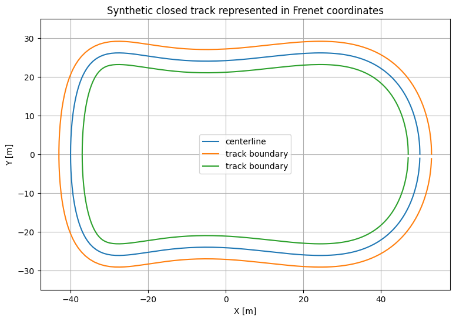
How to read the track figure
The center curve is
\gamma(s).
The two outer curves are obtained from
\gamma(s)\pm W(s)n(s).
A vehicle position represented by (s,e_y) lies on the normal line through \gamma(s).
The road constraint is therefore simply
|e_y|\le W.
plt.figure()
plt.plot(track.s, track.curvature)
plt.axhline(0.0, linewidth=1)
plt.xlabel("arc length s [m]")
plt.ylabel(r"curvature $K(s)$ [1/m]")
plt.title("Centerline curvature along the lap")
plt.show()
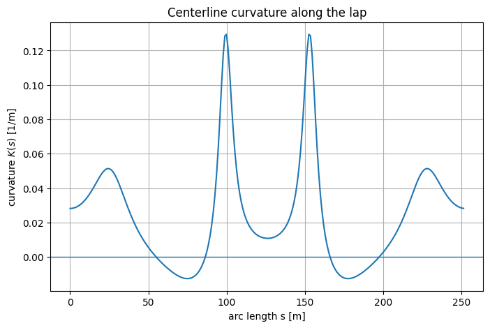
III.2 Radius of curvature
Where K(s)\neq0, the local signed radius is
R(s)=\frac{1}{K(s)}.
For speed limits, the magnitude matters:
|R(s)|=\frac{1}{|K(s)|}.
Large |K| means a tight corner. Small |K| means a nearly straight segment.
idx_tight = int(np.argmax(np.abs(track.curvature)))
print("tightest sampled point:")
print(f" s = {track.s[idx_tight]:.3f} m")
print(f" K = {track.curvature[idx_tight]:.6f} 1/m")
print(
" radius magnitude =",
1.0 / abs(track.curvature[idx_tight]),
"m",
)
tightest sampled point: s = 99.882 m K = 0.129430 1/m radius magnitude = 7.726163658375924 m
Part IV — Frenet position map
IV.1 Position represented by (s,e_y)
With the left normal of Part II, a point at arc length s and lateral offset e_y is
\boxed{
p
=
\gamma(s)
+
e_y n(s).
}
The track centerline corresponds to
e_y=0.
The two road edges correspond to
e_y=-W(s),
\qquad
e_y=+W(s).
IV.2 Differentiate the Frenet position map
Start from
p(t)
=
\gamma(s(t))
+
e_y(t)n(s(t)).
Differentiate with respect to time:
\dot p
=
\gamma'(s)\dot s
+
\dot e_y n
+
e_y n'(s)\dot s.
Using
\gamma'(s)=t,
\qquad
n'(s)=-K(s)t,
gives
\dot p
=
t\dot s
+
n\dot e_y
-
K e_y t\dot s.
Hence
\boxed{
\dot p
=
(1-Ke_y)\dot s\,t
+
\dot e_y\,n.
}
This equation explains the important geometric factor
\boxed{
1-Ke_y.
}
IV.3 Frenet-coordinate singularity
The map becomes locally singular when
1-K(s)e_y=0.
Geometrically, this occurs when the lateral offset reaches the local center of curvature.
A practical Frenet corridor should stay away from that condition.
A simple conservative check is
\boxed{
1-|K(s)|W(s)>0
}
for every point on the track.
frenet_margin = 1.0 - np.abs(track.curvature) * track.half_width
print(
"minimum conservative Frenet-coordinate margin:",
np.min(frenet_margin),
)
plt.figure()
plt.plot(track.s, frenet_margin)
plt.axhline(0.0, linewidth=1)
plt.xlabel("s [m]")
plt.ylabel(r"$1-|K(s)|W(s)$")
plt.title("Distance from the Frenet-coordinate singularity")
plt.show()
minimum conservative Frenet-coordinate margin: 0.6117089758061617
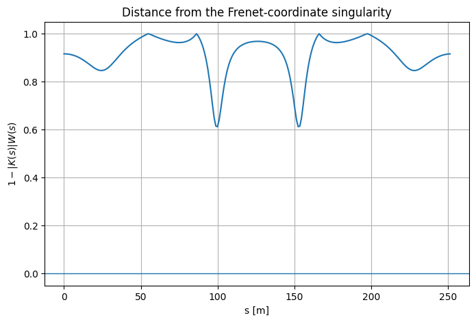
For this synthetic track, the minimum margin is positive: the complete road corridor stays safely on the regular side of the Frenet map.
That is a geometry check—not a dynamic safety guarantee.
Part V — Vehicle velocity in the Frenet frame
V.1 Heading error
Let
- \psi be the vehicle yaw angle;
- \psi_c(s) be the centerline tangent angle.
Define
\boxed{
e_\psi
=
\psi-\psi_c(s).
}
Thus e_\psi=0 means the vehicle is aligned with the local track tangent.
V.2 Body-frame velocity components
Let
v_x
be the longitudinal vehicle velocity and
v_y
the lateral vehicle velocity in the vehicle body frame.
Relative to the track tangent/normal frame, the velocity components are
\boxed{
v_t
=
v_x\cos e_\psi
-
v_y\sin e_\psi
}
and
\boxed{
v_n
=
v_x\sin e_\psi
+
v_y\cos e_\psi.
}
The first is progress along the tangent direction. The second is motion across the road.
V.3 Derive longitudinal progress \dot s
From the differentiated Frenet position map,
\dot p
=
(1-Ke_y)\dot s\,t+\dot e_y\,n.
Equate the tangent component with v_t:
(1-Ke_y)\dot s
=
v_x\cos e_\psi-v_y\sin e_\psi.
Therefore
\boxed{
\dot s
=
\frac{
v_x\cos e_\psi-v_y\sin e_\psi
}{
1-K(s)e_y
}.
}
This progress relation is the central equation of Frenet-frame racing models: it converts the body-frame velocity into progress along the track.
V.4 Derive lateral motion
Equating the normal component gives
\boxed{
\dot e_y
=
v_x\sin e_\psi
+
v_y\cos e_\psi.
}
If
e_\psi=0
\quad\text{and}\quad
v_y=0,
then
\dot e_y=0,
as expected for perfect centerline alignment.
V.5 Derive heading-error dynamics
The centerline tangent rotates with curvature:
\frac{d\psi_c}{ds}=K(s).
Hence
\dot\psi_c
=
K(s)\dot s.
If the vehicle yaw rate is r=\dot\psi, then
\boxed{
\dot e_\psi
=
r-K(s)\dot s.
}
rates = frenet_rates(
vx=12.0,
vy=0.4,
yaw_rate=0.15,
epsi=0.05,
kappa=0.02,
ey=0.5,
)
for key, value in rates.items():
print(f"{key:22s}: {value:.8f}")
sdot : 12.08587016 eydot : 0.99925014 epsidot : -0.09171740 dt_ds : 0.08274125 dey_ds : 0.08267920 depsi_ds : -0.00758881 denominator : 0.99000000 tangential_velocity : 11.96501146
Part VI — From time dynamics to spatial dynamics
VI.1 Chain-rule transformation
Suppose a time-domain state component obeys
\dot\xi=f_\xi(x,u).
If
\dot s>0,
then s can be used as the independent variable:
\boxed{
\frac{d\xi}{ds}
=
\frac{\dot\xi}{\dot s}.
}
This is the fundamental transformation behind spatial (arc-length-based) raceline formulations.
VI.2 Why \dot s>0 matters
If
\dot s=0,
then
\frac{d\xi}{ds}
=
\frac{\dot\xi}{\dot s}
is undefined.
If \dot s<0, the vehicle is moving backward relative to the chosen track orientation, which breaks the ordinary forward-progress racing interpretation.
Spatial formulations therefore require longitudinal progress to remain positive along the whole lap.
VI.3 Spatial Frenet kinematics
Divide the time-domain expressions by \dot s.
For lateral deviation,
\boxed{
\frac{de_y}{ds}
=
\frac{
(1-Ke_y)
\left(
v_x\sin e_\psi+v_y\cos e_\psi
\right)
}{
v_x\cos e_\psi-v_y\sin e_\psi
}.
}
For heading error,
\boxed{
\frac{de_\psi}{ds}
=
\frac{r}{\dot s}
-
K(s).
}
For elapsed time,
\boxed{
\frac{dt}{ds}
=
\frac{1}{\dot s}
=
\frac{
1-K(s)e_y
}{
v_x\cos e_\psi-v_y\sin e_\psi
}.
}
Part VII — Time as a state and the minimum-time objective
VII.1 Why introduce time as a state?
In the spatial formulation, s is no longer a state that evolves in time. It is the independent variable.
To recover lap time, introduce
t=t(s)
with
t'(s)=\frac{dt}{ds}.
Then total lap time is simply
\boxed{
T_{\mathrm{lap}}
=
t(s_f)-t(0).
}
If t(0)=0,
\boxed{
T_{\mathrm{lap}}=t(s_f).
}
VII.2 The six-state spatial vector
The full spatial raceline problem uses
\boxed{
x(s)
=
\begin{bmatrix}
v_x&
v_y&
r&
e_\psi&
t&
e_y
\end{bmatrix}^{\!\top}.
}
The semantic inputs are
\boxed{
a_x,\qquad \delta
}
for longitudinal acceleration and steering angle.
A detail worth keeping explicit: the order of the two inputs is only a convention.
- raceline formulations often write the input vector as [a_x,\delta]^\top;
- the racing code in this repository (
racing.py, used again in notebook 07) stores u=[\delta,a]^\top: steering first and acceleration second.
This notebook therefore uses the names a_x and \delta instead of relying on an ambiguous integer ordering.
Part VIII — The dynamic bicycle model
VIII.1 Tire slip angles and lateral forces
Notebook 07 simulates a dynamic bicycle model of a 1:10-scale RC car with the parameters of the BARC
platform: mass m=1.98\ \mathrm{kg}, distances l_f=l_r=0.125\ \mathrm{m} from the center of
gravity to the front and rear axles, and yaw inertia I_z=0.024\ \mathrm{kg\,m^2}. The model is
implemented in racing.py.
Its front and rear slip-angle expressions are
\boxed{
\alpha_f
=
\delta
-
\operatorname{atan2}
\left(
v_y+l_fr,
v_x
\right)
}
and
\boxed{
\alpha_r
=
-
\operatorname{atan2}
\left(
v_y-l_rr,
v_x
\right).
}
Each axle's lateral force then follows a smooth saturating law of the form
F_y
=
D\sin
\left(
C\arctan(B\alpha)
\right).
This is the simplified Pacejka “magic formula,” with stiffness factor B, shape factor C and peak force D. The BARC parameters are B=1, C=1.25 and D=0.8\,mg/2: each axle carries half of the weight (because l_f=l_r) and can deliver a peak lateral force of 0.8 times its normal load.
VIII.2 Vehicle time dynamics
With these forces, the body-frame velocities and the yaw rate evolve as
\boxed{
\dot v_x
=
a_x
-
\frac{F_{y,f}}{m}\sin\delta
+
rv_y
}
\boxed{
\dot v_y
=
\frac{
F_{y,f}\cos\delta+F_{y,r}
}{m}
-
rv_x
}
and
\boxed{
\dot r
=
\frac{
l_fF_{y,f}\cos\delta-l_rF_{y,r}
}{
I_z
}.
}
The spatial derivatives are then obtained from
v_x'=\frac{\dot v_x}{\dot s},
\qquad
v_y'=\frac{\dot v_y}{\dot s},
\qquad
r'=\frac{\dot r}{\dot s}.
bicycle_spatial_rhs evaluates these spatial derivatives, together with de_\psi/ds,
dt/ds=1/\dot s and de_y/ds, for the state [v_x,v_y,r,e_\psi,t,e_y]. The two cells below
evaluate the tire forces and this right-hand side at an example state.
example_force = bicycle_lateral_forces(
vx=10.0,
vy=0.25,
yaw_rate=0.2,
delta=0.08,
)
for key, value in example_force.items():
print(f"{key:10s}: {value:.8f}")
alpha_f : 0.05250693 alpha_r : -0.02249620 Fyf : 0.50910915 Fyr : -0.21841526
state_example = np.array([
10.0, # vx
0.25, # vy
0.20, # yaw rate r
0.04, # heading error epsi
0.00, # elapsed time
0.30, # lateral deviation ey
])
rhs_spatial = bicycle_spatial_rhs(
state_example,
ax=1.0,
delta=0.08,
kappa=0.03,
)
labels = [
"dvx/ds",
"dvy/ds",
"dr/ds",
"depsi/ds",
"dt/ds",
"dey/ds",
]
for label, value in zip(labels, rhs_spatial):
print(f"{label:10s}: {value:.8f}")
dvx/ds : 0.10220261 dvy/ds : -0.18406337 dr/ds : 0.37534374 depsi/ds : -0.01014427 dt/ds : 0.09927866 dey/ds : 0.06450069
VIII.3 The full raceline CFTOC
The full minimum-time raceline problem can be summarized as
\boxed{
\min t(s_f)
}
subject to:
- the spatial vehicle dynamics;
- tire-force constraints;
- track boundaries
-W(s)\le e_y(s)\le W(s);
- initial conditions;
- terminal/periodic conditions.
This is a nonlinear optimal-control problem.
It is usually solved by direct transcription: the spatial DAE is discretized on a grid in s (for example with Pyomo) and the resulting NLP is solved with a nonlinear solver such as IPOPT. Perantoni and Limebeer (2014) solve a problem of this type for a Formula One car.
Part IX — Why this notebook solves a reduced problem
IX.1 Centerline speed-planning assumptions
To get an executable problem that isolates the minimum-time spatial reasoning, assume:
e_y=0,
\qquad
e_\psi=0,
\qquad
v_y=0,
and denote
v_x=v.
Then
\dot s=v.
We optimize only the speed around the fixed centerline.
What disappears from the decision problem:
- lateral offset;
- steering;
- yaw dynamics;
- tire slip;
- combined tire-force allocation.
What remains:
- track curvature;
- lateral speed limit;
- acceleration/braking;
- total time.
Part X — Spatial longitudinal dynamics
X.1 Begin in time
The reduced longitudinal dynamics are
\dot v=a,
and
\dot s=v.
Therefore
\frac{dv}{ds}
=
\frac{\dot v}{\dot s}
=
\frac{a}{v}.
The division by v is inconvenient.
X.2 Introduce squared speed
Define
\boxed{
z=v^2.
}
Differentiate with respect to s:
\frac{dz}{ds}
=
2v\frac{dv}{ds}.
Substitute
\frac{dv}{ds}=\frac{a}{v}
to obtain
\boxed{
\frac{dz}{ds}=2a.
}
This is one of the key transformations in spatial speed planning:
nonlinear speed dynamics in v become affine dynamics in squared speed z=v^2.
X.3 Spatial discretization
For segment length \Delta s_i and piecewise-constant acceleration a_i,
\boxed{
z_{i+1}
=
z_i
+
2\Delta s_i a_i.
}
Hence
\boxed{
a_i
=
\frac{
z_{i+1}-z_i
}{
2\Delta s_i
}.
}
Acceleration constraints become linear difference inequalities in z.
Part XI — Curvature-limited speed
XI.1 Lateral acceleration
For motion along a path of curvature K,
a_{\mathrm{lat}}
=
v^2K.
In magnitude,
|a_{\mathrm{lat}}|
=
v^2|K|.
Impose the reduced friction condition
|a_{\mathrm{lat}}|
\le
\mu g.
Then
\boxed{
v^2|K|
\le
\mu g.
}
XI.2 Speed-squared cap
Because
z=v^2,
the lateral limit becomes
\boxed{
z(s)
\le
\frac{\mu g}{|K(s)|}
}
when K\neq0.
With an independent top-speed limit,
v\le v_{\max},
we obtain
\boxed{
z_{\max}(s)
=
\min
\left(
v_{\max}^2,
\frac{\mu g}{|K(s)|}
\right).
}
On a straight segment with K=0, only the top-speed limit remains.
mu = 1.0
g = 9.81
vmax = 35.0
z_cap = lateral_speed_squared_cap(
track.curvature,
mu=mu,
g=g,
vmax=vmax,
)
v_cap = np.sqrt(z_cap)
plt.figure()
plt.plot(track.s, v_cap)
plt.xlabel("s [m]")
plt.ylabel("local speed cap [m/s]")
plt.title("Local curvature/top-speed limit before longitudinal dynamics")
plt.show()
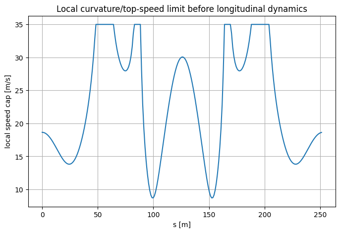
The local cap answers only:
How fast could the vehicle travel at this location if longitudinal acceleration history were ignored?
It does not yet answer whether the vehicle can accelerate or brake quickly enough to move between those local limits.
Part XII — Minimum-time objective in the spatial grid
XII.1 Time across one segment
Because
dt=\frac{ds}{v},
segment time is
\Delta t_i
=
\int_{s_i}^{s_{i+1}}
\frac{ds}{v(s)}.
If acceleration is constant over the segment, then z=v^2 is linear in s and the integral can be evaluated exactly.
XII.2 Exact segment-time formula
Using
z_{i+1}-z_i=2a_i\Delta s_i
and
v_i=\sqrt{z_i},
\qquad
v_{i+1}=\sqrt{z_{i+1}},
constant acceleration gives
v_{i+1}-v_i
=
a_i\Delta t_i.
Also,
v_{i+1}^2-v_i^2
=
(v_{i+1}-v_i)(v_{i+1}+v_i)
=
2a_i\Delta s_i.
Therefore
\boxed{
\Delta t_i
=
\frac{
2\Delta s_i
}{
v_i+v_{i+1}
}.
}
This formula is exact for the piecewise-constant-acceleration segment model.
v0_demo = 10.0
v1_demo = 14.0
ds_demo = 30.0
z0_demo = v0_demo**2
z1_demo = v1_demo**2
a_demo = (z1_demo - z0_demo) / (2.0 * ds_demo)
dt_velocity = (v1_demo - v0_demo) / a_demo
dt_spatial = segment_time_from_speed_squared(
z0_demo,
z1_demo,
ds_demo,
)
print("constant acceleration:", a_demo)
print("time from v1=v0+a dt:", dt_velocity)
print("time from spatial formula:", dt_spatial)
constant acceleration: 1.6 time from v1=v0+a dt: 2.5 time from spatial formula: 2.5
XII.3 Total lap time
For a periodic spatial grid,
\boxed{
T
=
\sum_i
\frac{
2\Delta s_i
}{
\sqrt{z_i}
+
\sqrt{z_{i+1}}
}.
}
The index wraps around at the finish line.
For positive speeds, this objective decreases when a feasible speed-squared value increases.
That monotonicity is the reason the reduced optimum is the largest dynamically feasible speed profile under the imposed caps.
Part XIII — Acceleration and braking envelopes
XIII.1 Forward acceleration constraint
From
a_i
=
\frac{
z_{i+1}-z_i
}{
2\Delta s_i
}
and
a_i\le a_{\max},
we obtain
\boxed{
z_{i+1}
\le
z_i
+
2\Delta s_i a_{\max}.
}
A forward pass propagates this upper bound around the track.
XIII.2 Backward braking constraint
Let
a_{\min}<0.
From
a_i\ge a_{\min},
we get
z_{i+1}-z_i
\ge
2\Delta s_i a_{\min}.
Rearrange:
\boxed{
z_i
\le
z_{i+1}
-
2\Delta s_i a_{\min}.
}
Because a_{\min} is negative, the right-hand side tells us the largest speed we may have before the next point if we still want enough braking authority to reach it.
This constraint naturally propagates backward from a corner.
XIII.3 Why braking information moves backward
Suppose a tight corner requires a small z_{i+1}.
The inequality
z_i
\le
z_{i+1}
-
2\Delta s_i a_{\min}
limits the speed one segment earlier.
That newly reduced z_i then limits z_{i-1}.
Repeating the operation moves the corner's braking requirement upstream.
This is the mathematical statement behind the driving intuition:
\boxed{
\text{brake before the corner, not after entering it.}
}
Part XIV — Why the local curvature cap alone is infeasible
XIV.1 Naive profile
A tempting but wrong planner is
z_i=z_{\max,i}.
It respects the lateral speed limit at every point.
But it may jump too quickly between neighboring curvature caps, requiring impossible longitudinal acceleration or braking.
z_naive = z_cap.copy()
a_naive = (
np.roll(z_naive, -1) - z_naive
) / (
2.0 * track.ds
)
violations_naive = np.sum(
(a_naive > 3.0 + 1e-8)
|
(a_naive < -6.0 - 1e-8)
)
print("maximum naive acceleration:", np.max(a_naive))
print("minimum naive acceleration:", np.min(a_naive))
print(
"segments violating longitudinal bounds:",
violations_naive,
"out of",
len(a_naive),
)
maximum naive acceleration: 204.7706638105116 minimum naive acceleration: -204.7706638105116 segments violating longitudinal bounds: 142 out of 240
plt.figure()
plt.plot(track.s, a_naive, label="acceleration implied by local speed cap")
plt.axhline(3.0, linestyle="--", label=r"$a_{\max}$")
plt.axhline(-6.0, linestyle="--", label=r"$a_{\min}$")
plt.xlabel("s [m]")
plt.ylabel(r"implied $a_x$ [m/s$^2$]")
plt.title("Local curvature limits alone are dynamically inconsistent")
plt.legend()
plt.show()
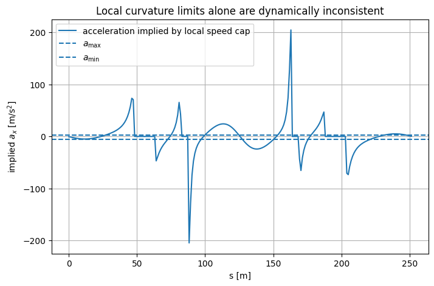
This figure is intentionally extreme.
The curvature cap can change sharply from one spatial sample to the next. Following it exactly would require unrealistically large acceleration changes.
The longitudinal dynamics must smooth that profile through forward and backward reachability.
Part XV — Closed-lap forward/backward planner
XV.1 Algorithm
Initialize with the local cap
z_i^{(0)}=z_{\max,i}.
Then repeatedly apply:
Forward pass
z_{i+1}
\leftarrow
\min
\left(
z_{i+1},
z_i+2\Delta s_i a_{\max}
\right).
Backward pass
z_i
\leftarrow
\min
\left(
z_i,
z_{i+1}-2\Delta s_i a_{\min}
\right).
Because the track is closed, indices are circular. Each iteration is one full forward sweep
followed by one full backward sweep around the loop, and the iterations stop when a sweep changes
nothing (to a tolerance of 10^{-9}); periodic_minimum_time_speed_profile reports how many were
needed.
The algorithm only decreases values, so it converges to the greatest fixed point satisfying all these upper-envelope constraints.
XV.2 Why the greatest feasible profile is minimum-time
For every segment,
\Delta t_i
=
\frac{
2\Delta s_i
}{
\sqrt{z_i}+\sqrt{z_{i+1}}
}.
For positive z_i,
\frac{\partial \Delta t_i}{\partial z_i}<0.
Thus, if one feasible profile is componentwise larger than another, it cannot have a larger lap time.
The envelope algorithm computes the largest profile compatible with:
- local speed caps;
- forward acceleration;
- backward braking.
Therefore it is the time-minimizing profile for this reduced decoupled model.
speed_solution = periodic_minimum_time_speed_profile(
track,
mu=1.0,
vmax=35.0,
amin=-6.0,
amax=3.0,
)
print("planner success:", speed_solution["success"])
print(
"forward/backward fixed-point iterations:",
speed_solution["iterations"],
)
print(
"lap time:",
speed_solution["time"],
"s",
)
print(
"speed range:",
speed_solution["v"].min(),
"to",
speed_solution["v"].max(),
"m/s",
)
print(
"acceleration range:",
speed_solution["a"].min(),
"to",
speed_solution["a"].max(),
"m/s^2",
)
planner success: True forward/backward fixed-point iterations: 3 lap time: 17.09393800550383 s speed range: 8.705955748145508 to 20.91357453979142 m/s acceleration range: -6.0 to 3.0000000000000133 m/s^2
plt.figure()
plt.plot(track.s, np.sqrt(speed_solution["zmax"]),
label="local curvature/top-speed cap")
plt.plot(track.s, speed_solution["v"],
label="dynamically feasible minimum-time speed")
plt.xlabel("s [m]")
plt.ylabel("speed [m/s]")
plt.title("Local speed limit versus dynamically reachable lap-speed profile")
plt.legend()
plt.show()
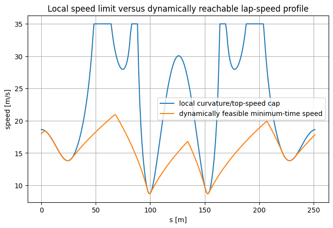
How to read the speed figure
The upper curve represents the speed that local curvature alone would permit.
The optimized curve may lie below it for two different reasons:
- before a tight corner: braking must start early;
- after a tight corner: acceleration is finite, so speed recovers gradually.
Where the two curves coincide, the local curvature/top-speed constraint is active.
plt.figure()
plt.plot(track.s, speed_solution["a"], label="longitudinal acceleration")
plt.axhline(3.0, linestyle="--", label=r"$a_{\max}$")
plt.axhline(-6.0, linestyle="--", label=r"$a_{\min}$")
plt.xlabel("s [m]")
plt.ylabel(r"$a_x$ [m/s$^2$]")
plt.title("Optimal longitudinal acceleration in the reduced spatial model")
plt.legend()
plt.show()
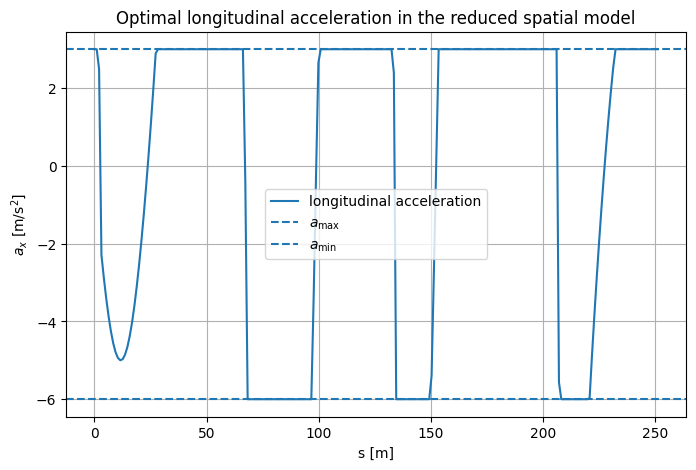
XV.3 Active constraints
The optimal profile frequently contains three kinds of segments:
- maximum acceleration;
- maximum braking;
- local curvature/top-speed saturation.
This is a common structure in time-optimal path-parameterization problems.
a = speed_solution["a"]
z = speed_solution["z"]
cap = speed_solution["zmax"]
active_accel = np.isclose(a, 3.0, atol=1e-6)
active_brake = np.isclose(a, -6.0, atol=1e-6)
active_cap = np.isclose(z, cap, atol=1e-6)
print("segments at max acceleration:", int(active_accel.sum()))
print("segments at max braking:", int(active_brake.sum()))
print("points at local speed cap:", int(active_cap.sum()))
segments at max acceleration: 140 segments at max braking: 55 points at local speed cap: 45
Part XVI — Braking preview around the tightest corner
XVI.1 Find the tightest corner
Let
i_c
=
\arg\max_i |K_i|.
The local curvature cap becomes smallest near that point.
We inspect a spatial window around the corner and compare:
- curvature;
- local speed cap;
- feasible speed;
- longitudinal acceleration.
corner = int(np.argmax(np.abs(track.curvature)))
window = 35
indices = (
np.arange(
corner - window,
corner + window + 1,
)
% len(track.s)
)
distance_to_corner = np.zeros(len(indices))
for j, idx in enumerate(indices):
# Signed index-based local coordinate is enough for this explanatory plot
distance_to_corner[j] = (j - window) * np.mean(track.ds)
plt.figure()
plt.plot(
distance_to_corner,
np.sqrt(speed_solution["zmax"])[indices],
label="local cap",
)
plt.plot(
distance_to_corner,
speed_solution["v"][indices],
label="feasible speed",
)
plt.axvline(0.0, linestyle="--", label="tightest sampled corner")
plt.xlabel("approx. distance relative to corner [m]")
plt.ylabel("speed [m/s]")
plt.title("Braking begins upstream of the tight corner")
plt.legend()
plt.show()
plt.figure()
plt.plot(
distance_to_corner,
speed_solution["a"][indices],
label="longitudinal acceleration",
)
plt.axhline(0.0, linewidth=1)
plt.axvline(0.0, linestyle="--", label="tightest sampled corner")
plt.xlabel("approx. distance relative to corner [m]")
plt.ylabel(r"$a_x$ [m/s$^2$]")
plt.title("Acceleration profile around the tightest corner")
plt.legend()
plt.show()
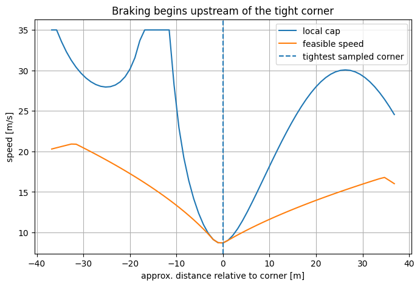
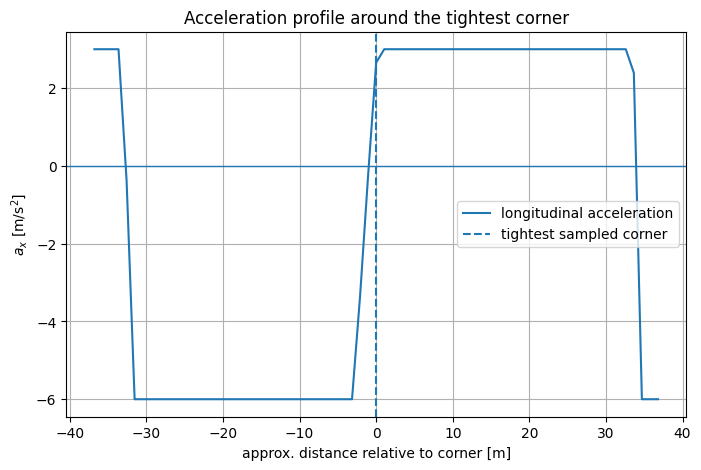
The optimizer is not “reacting” to curvature only at the current position.
The backward envelope propagates future corner constraints into present speed decisions.
That is a deterministic form of preview.
Part XVII — Cumulative lap time
XVII.1 Time as a spatial state in the reduced model
The full spatial formulation of Part VII contains t(s) explicitly as a state.
Our reduced planner can reconstruct the same quantity by accumulating segment times:
t_{i+1}
=
t_i
+
\Delta t_i.
cumulative_time = np.r_[
0.0,
np.cumsum(speed_solution["segment_time"]),
]
s_closed = np.r_[
track.s,
track.length,
]
plt.figure()
plt.plot(s_closed, cumulative_time)
plt.xlabel("s [m]")
plt.ylabel("elapsed time t(s) [s]")
plt.title("Elapsed time as a spatial state")
plt.show()
print(
"terminal elapsed time:",
cumulative_time[-1],
"s",
)
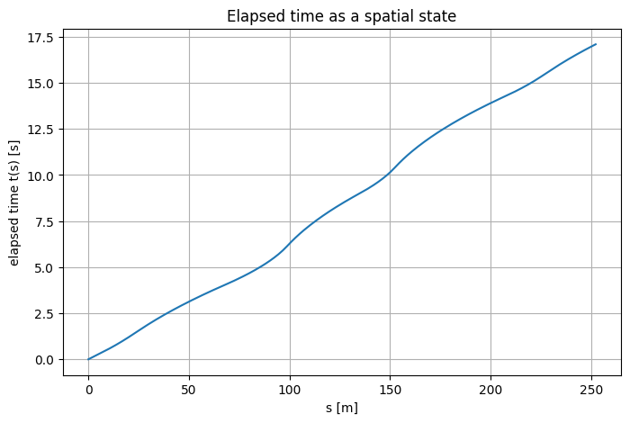
terminal elapsed time: 17.09393800550383 s
Part XVIII — Friction sensitivity
XVIII.1 Friction coefficient changes the curvature cap
The local bound is
z
\le
\frac{\mu g}{|K|}.
Therefore decreasing \mu lowers the speed cap in curved regions.
It also changes how much speed must be removed before corners and how much can be carried through them.
mu_values = [0.6, 0.8, 1.0, 1.2]
mu_solutions = {}
for mu_value in mu_values:
mu_solutions[mu_value] = periodic_minimum_time_speed_profile(
track,
mu=mu_value,
vmax=35.0,
amin=-6.0,
amax=3.0,
)
print(
f"mu={mu_value:.1f}: "
f"lap time={mu_solutions[mu_value]['time']:.4f} s"
)
mu=0.6: lap time=20.1416 s mu=0.8: lap time=18.3589 s mu=1.0: lap time=17.0939 s mu=1.2: lap time=16.1251 s
plt.figure()
for mu_value in mu_values:
plt.plot(
track.s,
mu_solutions[mu_value]["v"],
label=rf"$\mu={mu_value}$",
)
plt.xlabel("s [m]")
plt.ylabel("speed [m/s]")
plt.title("Friction coefficient changes the feasible racing-speed profile")
plt.legend()
plt.show()
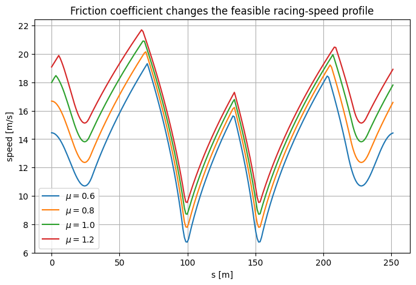
lap_times_mu = np.array([
mu_solutions[mu_value]["time"]
for mu_value in mu_values
])
plt.figure()
plt.plot(mu_values, lap_times_mu, "-o")
plt.xlabel(r"friction coefficient $\mu$")
plt.ylabel("lap time [s]")
plt.title("Reduced-model lap time versus friction")
plt.show()
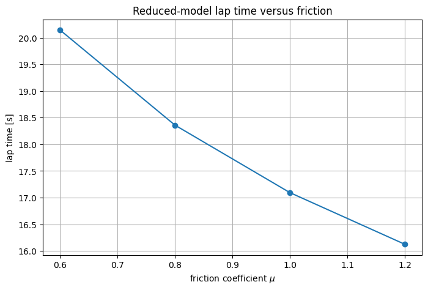
Under this reduced model, higher friction cannot make the optimum worse because it relaxes the local lateral speed constraints.
That monotonic conclusion follows from feasible-set inclusion.
A full tire model is more complicated, but the basic intuition remains: tire-force capability strongly shapes minimum-time behavior.
Part XIX — Acceleration versus braking authority
XIX.1 Two different physical roles
Acceleration authority determines how rapidly speed can be regained after a slow corner.
Braking authority determines how late braking can begin before a slow corner.
They therefore affect different spatial regions of the optimal profile.
cases = [
("baseline", -6.0, 3.0),
("weaker braking", -3.5, 3.0),
("weaker acceleration", -6.0, 1.5),
]
case_solutions = {}
for name, amin, amax in cases:
case_solutions[name] = periodic_minimum_time_speed_profile(
track,
mu=1.0,
vmax=35.0,
amin=amin,
amax=amax,
)
print(
f"{name:20s}: "
f"lap time={case_solutions[name]['time']:.4f} s"
)
baseline : lap time=17.0939 s weaker braking : lap time=17.7318 s weaker acceleration : lap time=18.7482 s
plt.figure()
for name, _, _ in cases:
plt.plot(
track.s,
case_solutions[name]["v"],
label=name,
)
plt.xlabel("s [m]")
plt.ylabel("speed [m/s]")
plt.title("Acceleration and braking limits shape different parts of the lap")
plt.legend()
plt.show()
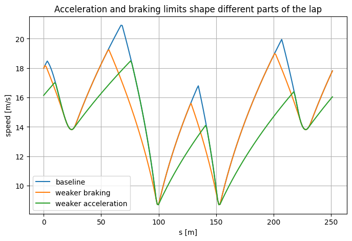
Weak braking pushes deceleration farther upstream.
Weak acceleration makes the post-corner recovery slower.
In a full vehicle model, these effects are additionally coupled to tire loading, steering, power, and aerodynamic forces.
Part XX — Spatial-grid convergence
XX.1 Why discretization density matters
The continuous problem lives on
s\in[0,s_f].
A numerical optimizer or planner uses finitely many spatial nodes.
A grid that is too coarse can:
- miss curvature peaks;
- approximate braking zones poorly;
- bias lap time.
We therefore check whether the reduced solution stabilizes as the grid is refined.
grid_sizes = [60, 120, 240, 480]
grid_times = []
for n_grid in grid_sizes:
track_grid = build_demo_track(
n=n_grid,
half_width=3.0,
)
sol_grid = periodic_minimum_time_speed_profile(
track_grid,
mu=1.0,
vmax=35.0,
amin=-6.0,
amax=3.0,
)
grid_times.append(sol_grid["time"])
print(
f"N={n_grid:3d}: "
f"lap time={sol_grid['time']:.8f} s"
)
N= 60: lap time=16.93827668 s N=120: lap time=17.07213924 s N=240: lap time=17.09393801 s N=480: lap time=17.10620213 s
plt.figure()
plt.plot(grid_sizes, grid_times, "-o")
plt.xlabel("spatial grid points")
plt.ylabel("computed lap time [s]")
plt.title("Spatial-grid convergence of the reduced planner")
plt.show()
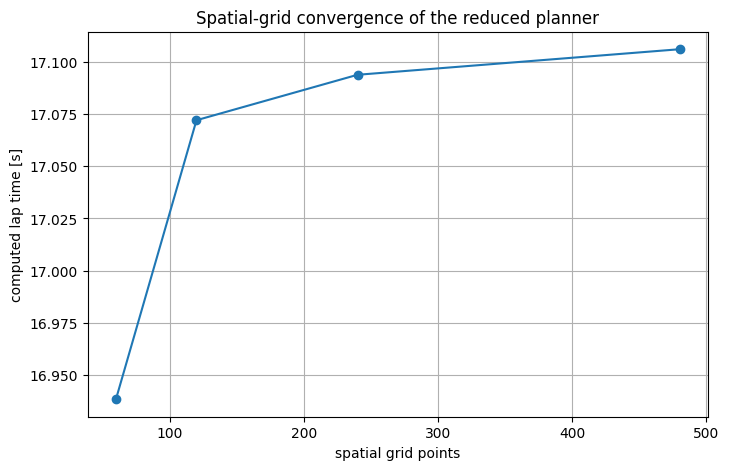
The values approach a limiting numerical result.
In this run the computed lap time increases with the number of grid points, and the increments shrink. A coarse grid can step over the apex of a tight corner: it underestimates the peak curvature, allows a higher minimum corner speed, and therefore returns an optimistic lap time.
The convergence is not required to be monotone in general, because both the curvature representation and the piecewise spatial dynamics are changing with the grid.
Part XXI — An important limitation: tire-force coupling
XXI.1 Separate limits can be optimistic
Our reduced planner imposes:
|a_x|\le a_{x,\max}
and separately
|a_y|
=
v^2|K|
\le
\mu g.
But a physical tire has a limited combined force capability.
A simple approximation is the friction circle:
\boxed{
a_x^2+a_y^2
\le
(\mu g)^2.
}
With
a_y=zK,
this becomes
\boxed{
a_x^2+(zK)^2
\le
(\mu g)^2.
}
This coupling is an extension beyond the reduced planner and explains why a full tire-force raceline problem is more difficult.
friction_usage = friction_circle_utilization(
speed_solution["z"],
speed_solution["a"],
track.curvature,
mu=1.0,
)
print(
"maximum simple friction-circle utilization:",
np.max(friction_usage),
)
print(
"segments above 100% in this diagnostic:",
int(np.sum(friction_usage > 1.0 + 1e-8)),
)
maximum simple friction-circle utilization: 1.1708172711379095 segments above 100% in this diagnostic: 66
plt.figure()
plt.plot(
track.s,
friction_usage,
label="combined acceleration utilization",
)
plt.axhline(
1.0,
linestyle="--",
label="simple friction-circle limit",
)
plt.xlabel("s [m]")
plt.ylabel("dimensionless utilization")
plt.title("Diagnostic: decoupled planner can overuse combined tire capability")
plt.legend()
plt.show()
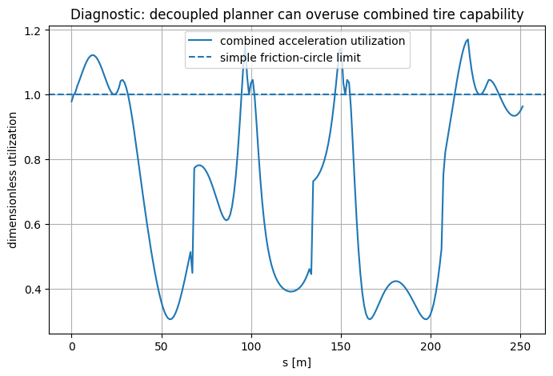
How to interpret this diagnostic
A value
\text{utilization}=1
corresponds to the boundary of the simple combined-acceleration circle.
A value greater than one does not mean the notebook code is numerically wrong.
It means the reduced model allowed a combination of longitudinal and lateral acceleration that the additional friction-circle model would forbid.
This is why full raceline formulations impose tire-force constraints rather than only an independent curvature speed cap.
Part XXII — Why a full raceline can be faster than centerline speed planning
XXII.1 The centerline is not generally the minimum-time path
Our executable planner fixes
e_y(s)=0.
The full raceline problem optimizes
e_y(s)
inside
-W(s)\le e_y(s)\le W(s).
A racing trajectory can use the available width to:
- approach the outside of a corner;
- cut toward the inside;
- exit toward the outside.
This can reduce the effective curvature experienced by the vehicle and permit a higher speed through the turn.
Therefore
\boxed{
\text{centerline minimum-time speed planning}
\neq
\text{full minimum-time raceline optimization}.
}
XXII.2 Why the full problem is nonlinear
The complete problem contains several nonlinearities:
- trigonometric Frenet geometry;
- denominator
1-Ke_y;
- nonlinear tire-force laws;
- steering-dependent force projections;
- the minimum-time term
t'=\frac{1}{\dot s};
- possibly combined tire-force constraints.
That is why the full raceline is computed by solving a nonlinear program rather than a QP.
Part XXIII — From offline raceline to MPC and LMPC
XXIII.1 The standard pipeline
Once the raceline is computed offline, one can store reference profiles such as
e_y^\star(s),
\quad
v_x^\star(s),
\quad
e_\psi^\star(s),
\quad
u^\star(s).
An online MPC can then track those profiles while reacting to deviations.
Learning MPC adds another layer:
- successful laps become safe-set data;
- lap performance provides cost-to-go data;
- local dynamics may also be learned from stored transitions.
This is the bridge from Notebook 06 to the later racing notebooks.
Part XXIV — Conventions worth keeping straight
XXIV.1 Mathematical normal versus code normal
This notebook uses
n=
[-t_y,t_x]^\top,
\qquad
p=\gamma+e_yn.
Some implementations use
n_{\mathrm{code}}
=
[t_y,-t_x]^\top
=
-n
and
p=\gamma-e_y n_{\mathrm{code}}.
These produce the same mapping. Track.normal() in racing.py returns the left normal n.
XXIV.2 Input ordering
Raceline formulations often describe the inputs as
[a_x,\delta]^\top.
The racing code in this repository (bicycle_dynamics, and the data-collection laps of notebook 07)
reads
\delta=u_0,
\qquad
a=u_1.
Use variable names when moving between the two conventions.
XXIV.3 Offline raceline versus online LMPC racing
An offline raceline is computed by solving one nonlinear trajectory-optimization problem for the whole lap.
Learning MPC racing (Rosolia and Borrelli, 2020) instead repeatedly solves short-horizon problems online and learns from previous laps; notebook 07 builds the learned prediction models such a controller needs.
They are related but not interchangeable.
Part XXV — Common pitfalls
XXV.1 Pitfall: Frenet coordinates mean the vehicle is constrained to the centerline
No.
Frenet coordinates explicitly retain the lateral deviation e_y. Only the reduced executable planner in this notebook sets e_y=0.
XXV.2 Pitfall: curvature alone determines the optimal speed
No.
Curvature gives a local lateral limit.
Acceleration and braking constraints couple different locations along the track.
XXV.3 Pitfall: brake at the point where the speed cap becomes small
Too late.
The braking constraint propagates the corner requirement backward.
XXV.4 Pitfall: 2\Delta s/(v_i+v_{i+1}) is just an arbitrary trapezoidal rule
For the piecewise constant-acceleration segment model, it is the exact segment time.
XXV.5 Pitfall: 1-Ke_y is just a numerical denominator
It comes directly from differentiating the offset curve
p=\gamma+e_yn.
It has a geometric meaning and a genuine singularity.
XXV.6 Pitfall: independent longitudinal and lateral acceleration limits are the same as tire-force constraints
No.
A combined force limit couples the two.
The friction-circle diagnostic demonstrates the difference.
XXV.7 Pitfall: the reduced speed planner is the full raceline optimizer
No.
It fixes the geometric path and optimizes only speed.
Part XXVI — Check your understanding
Try to answer each question before opening its answer.
1. Why use Frenet coordinates for racing?
Answer
Because progress along the track becomes s, lateral road constraints become direct bounds on e_y, and track geometry is summarized through curvature K(s).
2. Derive the factor 1-Ke_y.
Answer
Differentiate p=\gamma(s)+e_y n(s) and use \gamma'=t and n'=-Kt:
\dot p=(1-Ke_y)\dot s\,t+\dot e_y\,n.
3. Derive \dot s.
Answer
The vehicle's tangential velocity relative to the track is v_x\cos e_\psi-v_y\sin e_\psi. Equating tangent components gives
\dot s=
\frac{v_x\cos e_\psi-v_y\sin e_\psi}{1-Ke_y}.
4. Why must \dot s>0?
Answer
The spatial transformation divides every time derivative by \dot s. Zero progress makes the transformation singular, and negative progress reverses the assumed track parameterization direction.
5. Why is time included as a state?
Answer
Because s is the independent variable. The differential state t'(s)=1/\dot s accumulates elapsed time, and minimizing t(s_f) minimizes lap time.
6. Why introduce z=v^2?
Answer
It turns
\frac{dv}{ds}=\frac{a}{v}
into
\frac{dz}{ds}=2a,
which is affine in longitudinal acceleration.
7. Where does the curvature speed limit come from?
Answer
Centripetal/lateral acceleration is |a_y|=v^2|K|. Imposing |a_y|\le\mu g gives v^2\le\mu g/|K|.
8. Why is a forward pass needed?
Answer
To enforce that speed cannot increase faster than permitted by maximum longitudinal acceleration.
9. Why is a backward pass needed?
Answer
To propagate future low-speed corner requirements upstream according to finite braking authority.
10. Why is the largest feasible z profile minimum-time?
Answer
Every segment-time term decreases as either endpoint speed increases, so a componentwise larger feasible speed profile cannot be slower.
11. What is missing from the executable planner?
Answer
Optimized lateral offset, steering, lateral/yaw dynamics, nonlinear tire forces, and combined tire-force constraints.
12. Why can a full raceline be faster than the centerline solution?
Answer
It can use track width to reduce effective path curvature through corners and therefore carry more speed while remaining within the road corridor.
13. What does a friction-circle utilization above one mean in this notebook?
Answer
The decoupled reduced model allowed simultaneous longitudinal and lateral accelerations that a simple combined-friction model would forbid.
14. How does this notebook connect to Learning MPC?
Answer
The offline raceline provides reference geometry/performance, while repeated online laps can later supply safe-set, terminal-value, and local-model data for LMPC.
Part XXVII — Exercises
Exercise 1 — Frenet-map derivative
Starting from
p=\gamma(s)+e_yn(s),
derive
\dot p=(1-Ke_y)\dot s\,t+\dot e_y\,n.
Exercise 2 — Progress rate
Resolve the body-frame velocity into tangent and normal components and derive \dot s and \dot e_y.
Exercise 3 — Heading-error dynamics
Given
e_\psi=\psi-\psi_c(s)
and
\frac{d\psi_c}{ds}=K(s),
derive
\dot e_\psi=r-K\dot s.
Exercise 4 — Spatial derivatives
Derive explicit formulas for
\frac{de_y}{ds},
\qquad
\frac{de_\psi}{ds},
\qquad
\frac{dt}{ds}.
Exercise 5 — Coordinate regularity
For a constant-curvature turn of radius R, determine the lateral offset at which the Frenet map becomes singular.
Interpret the answer geometrically.
Exercise 6 — Squared-speed dynamics
Show that
z=v^2
leads to
z_{i+1}=z_i+2\Delta s_i a_i.
Exercise 7 — Exact segment time
Derive
\Delta t_i
=
\frac{2\Delta s_i}{v_i+v_{i+1}}
for constant longitudinal acceleration.
Exercise 8 — Braking distance in spatial form
Starting from a current squared speed z_0 and constant braking a_{\min}<0, derive the spatial distance required to reach a target squared speed z_f.
Exercise 9 — Friction sweep
Repeat the lap calculation for several values of \mu.
Explain which portions of the track change most.
Exercise 10 — Braking sweep
Change a_{\min} while keeping a_{\max} fixed.
Identify how far upstream the braking zone moves.
Exercise 11 — Grid convergence
Use at least four spatial resolutions and estimate the numerical discretization error in lap time.
Exercise 12 — Combined tire-force constraint
Replace the decoupled condition with
a_x^2+(zK)^2\le(\mu g)^2.
Explain why the simple independent forward/backward envelopes no longer have constant bounds.
Exercise 13 — Full raceline variables
Starting from the six-state spatial model of Part VII, list all states, inputs, and constraints required for the full nonlinear raceline CFTOC.
Exercise 14 — Offline/online architecture
Propose how the offline raceline could be used as a reference by an online MPC, and which deviations the online controller would have to regulate.
Part XXVIII — References
The notebook derives the standard elements of spatial minimum-time racing formulations:
- centerline geometry and curvature;
- Frenet coordinates (s,e_y,e_\psi);
- the progress relation \dot s;
- time as a spatial state;
- the six-state racing formulation;
- the nonlinear minimum-time CFTOC;
- tire-force and track-boundary constraints;
- the offline-raceline-to-MPC/LMPC workflow.
The dynamic bicycle model of Part VIII uses the parameters of a 1:10-scale RC car (the BARC platform), the kind of vehicle used in the Learning MPC racing experiments of Rosolia and Borrelli (2020).
The closed-lap forward/backward centerline speed planner, the argument based on z=v^2, the grid convergence study, and the friction-circle utilization diagnostic make the spatial minimum-time ideas executable without a nonlinear programming solver.
- G. Perantoni and D. J. N. Limebeer, “Optimal control for a Formula One car with variable parameters,” Vehicle System Dynamics, 52(5), 2014, 653–678.
- U. Rosolia and F. Borrelli, “Learning How to Autonomously Race a Car: A Predictive Control Approach,” IEEE Transactions on Control Systems Technology, 28(6), 2020.
- U. Rosolia, A. Carvalho, and F. Borrelli, “Autonomous Racing using Learning Model Predictive Control,” American Control Conference (ACC), 2017.
- R. Rajamani, Vehicle Dynamics and Control, 2nd ed., Springer, 2012.
- H. B. Pacejka, Tire and Vehicle Dynamics, 3rd ed., Butterworth-Heinemann, 2012.
- F. Borrelli, A. Bemporad, and M. Morari, Predictive Control for Linear and Hybrid Systems, Cambridge University Press, 2017.